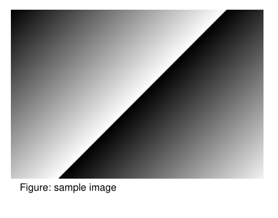
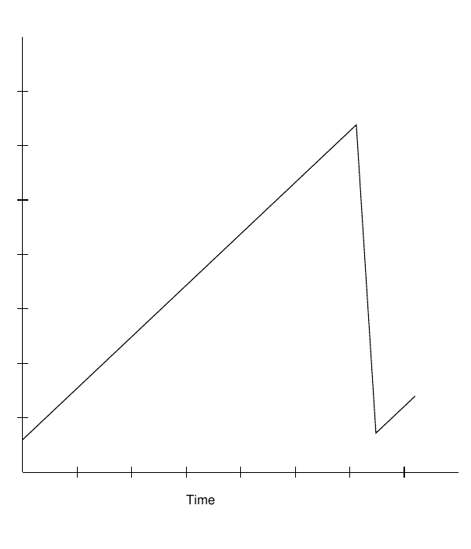

Measured shared: 2026-11-15T17:50:08.668Z · distributed: 2026-11-15T17:50:12.112Z · many: 2026-11-15T17:52:12.192Z. Synthetic local acceptance; no paid compute.
WASM memory observed
Linear scale: 0–24 MiB. This is the WASM memory buffer, not total RSS. Enforced ceiling: 256 MiB. Process RSS: shared 93.68 MiB; distributed 93.48 MiB; many 97.18 MiB.
Large-input read and JSONL sizes
Linear scale: 0–5 MiB. Both source files are approximately 1 GiB. Shared: 20,000 inventoried / 1,000 deep. Distinct: 10,000 inventoried / 1,000 deep. Pixels were not decoded.
10,000-file latency distribution
30,000 pages inventoried and measured; 37,189 ms total. Variable-size synthetic Blob snapshots, sequential queue, reused WASM. Timings are local non-isolated observations.
Actual source evidence

layout-candidates.pdf · page 2: caption candidate, 36 / 40 estimated text bytes.

Page 3: vector-figure candidate; table candidate count 0 despite raw grid connectivity.